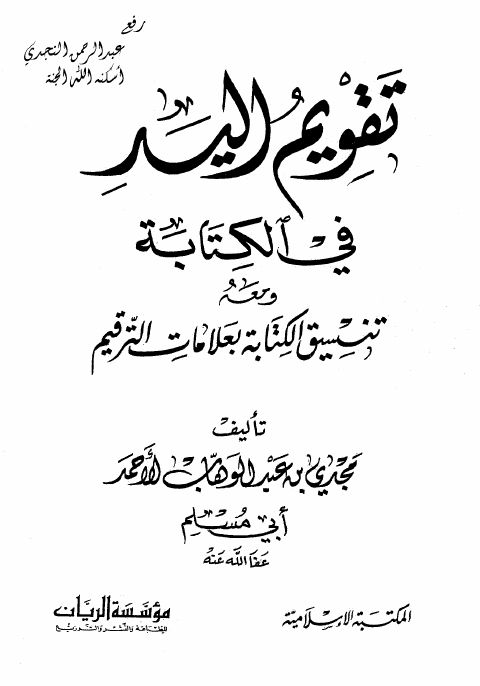

Downloads need an internet connection.
تقويم اليد في الكتابة ومعه تنسيق الكتابة بعلامات الترقيم
Authors: مجدي بن عبد الوهاب الأحمد
Publishers: مؤسسة الريان
**▫️ العنوان: تقويم اليد في الكتابة ومعه تنسيق الكتابة بعلامات الترقيم** ▪️ المؤلف: #مجدي_بن_عبد_الوهاب_الأحمد ▫️ الناشر: #مؤسسة_الريان_للطباعة_والنشر_والتوزيع ▪️ تاريخ النشر: 2006 م ▫️ بلد النشر: بيروت، #لبنان ▪️ الطبعة: 1 ▫️ عدد الأجزاء: 1 ▪️ الصفحات: 32 ▫️ نوع الوعاء: #كتاب ▪️ التصنيف الرئيسي: #اللغة_العربية ▫️ التصنيف الفرعي: #إملاء ۪